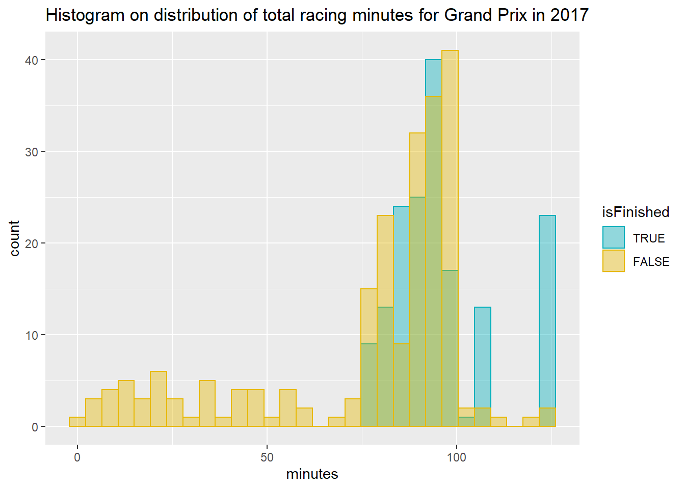
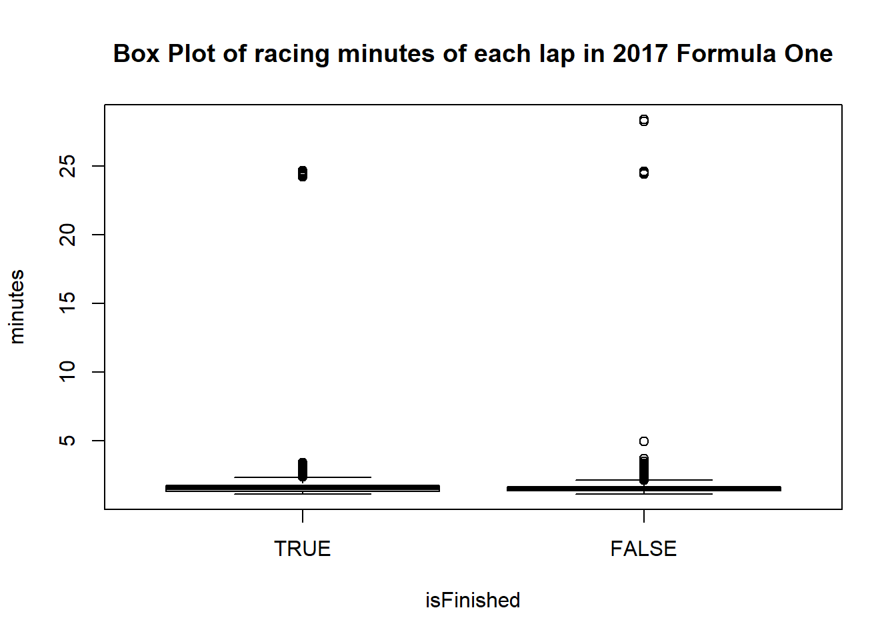
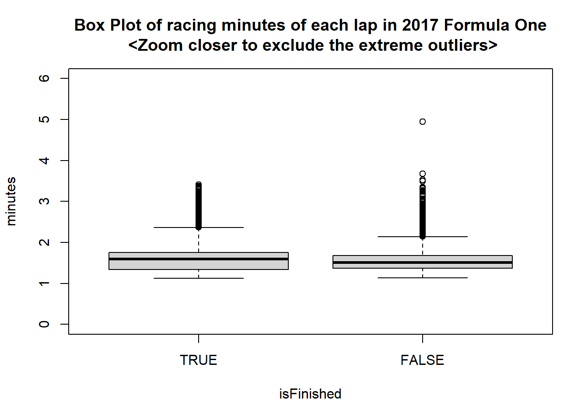
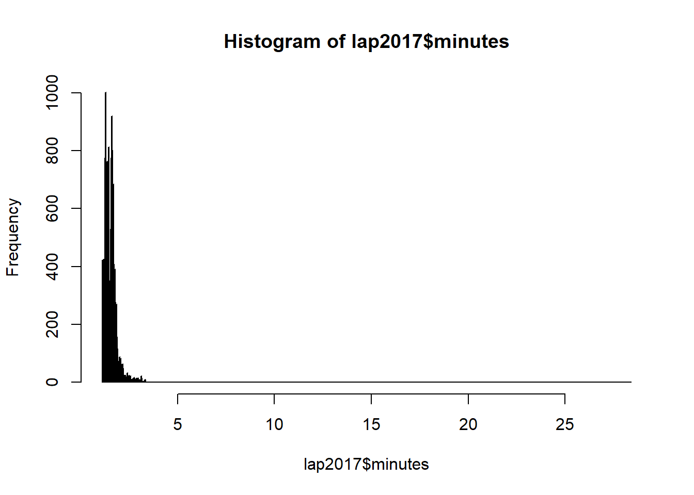
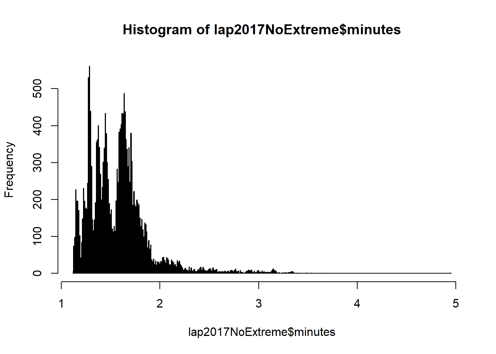
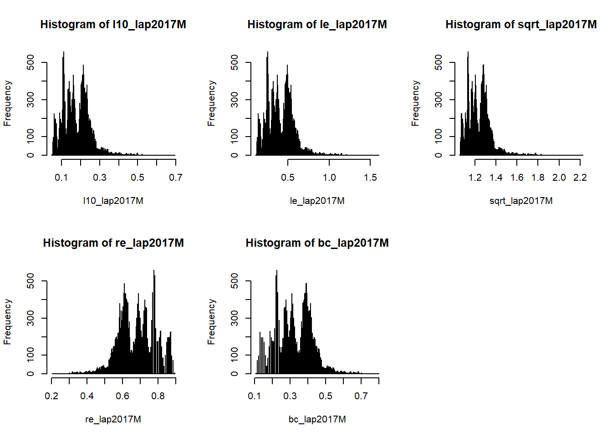

The FIA Formula One World Championship has been one of the premier forms of racing around the world since its inaugural season in 1950. A set of csv files with different relations of F1 information are used to perform all the required data preprocessing tasks. We have come up with 2 different research questions so that we have directions to join the required files to get sufficient information. All the variables of the read-in data has been reviewed and converted into proper data types. We need to filter and select desired observations to find the solutions of our research questions. In addition, we also reshaped our data using spread, and transform the units of measurements of the variables with mutate in order to carry out better presentation of the results. Missing values and outliers are found in the datasets, we have explored the relation of the dataset extensively in order to minimize the missing values, as well as finding supporting reasons to retain the outliers. At last, we applied transformation and observe if there is any difference in normality in one of the variables in our dataset.
The dataset we used in this assignment is from an open source web site (https://www.kaggle.com), details could be found at: https://www.kaggle.com/cjgdev/formula-1-race-data-19502017. This dataset contains all the formula one data from 1950 to 2017. It consists of 13 csv files. We are only looking into 6 of these files, which could provide all the relevant information to our research questions. Most of the variables in the files are self-explanatory. We are only listing those variables which require further explanations.
Who are the winner(s) for all the Grand Prix in 2017? Which constructor team do these winners belong to?
results.csv - records all the racing results for each Grand Prix from 1950 - 2017. Variables: totalmilliseconds - stores the total time taken to finish all the laps in the entire Grand Prix for the particular driver.
races.csv - records all the Grand Prix for different year. each Grand Prix is designated with a unique identifier, circuitId, and for each particular year, each Grand Prix would be assigned with a unique raceId. E.g. Australian Grand Prix has given circuitId=1, in 2017, it’s raceId is 969, in 2016, it’s raceId is 948. This file can be joined to the results file via raceId.
drivers.csv - provides drivers information, this file can be joined to the results file via driverId. constructors.csv - provides the constructors information, this file can be joined to the results file via constructorId.
status.csv - describes the exit status of the race, this file can be joined to the results file via statusId.
lapTime.csv
rm(list=ls())
#Read-in all the csv files
results <- read.csv("src/R/data/f1/results.csv", stringsAsFactors = FALSE )
races <- read.csv("src/R/data/f1/races.csv", stringsAsFactors = FALSE)
constructors <- read.csv("src/R/data/f1/constructors.csv", stringsAsFactors = FALSE)
status <- read.csv("src/R/data/f1/status.csv", stringsAsFactors = FALSE)
drivers <- read.csv("src/R/data/f1/drivers.csv", stringsAsFactors = FALSE)
#Filter to view 2017 races only
r <- races %>% filter( year == 2017)
#Join the races table with results table, only 2017 records would be selected. Then join with the constructor, status and drivers table to get relevant information. fOne2017 is our final result set which contain all the relevant information we can explore.
rjoin <- inner_join(r, results, by="raceId")
rjoin2 <- inner_join(rjoin, constructors, by="constructorId")
rjoin3 <- inner_join(rjoin2, status, by="statusId")
fOne2017 <- inner_join(rjoin3, drivers, by="driverId")
#Re-define the names of the variables for clarity. Only the relevant variables are listed as below:
names(fOne2017)[1] <- "raceId"
names(fOne2017)[2] <- "raceYear"
names(fOne2017)[5] <- "raceName"
names(fOne2017)[6] <- "raceDate"
names(fOne2017)[7] <- "raceURL"
names(fOne2017)[9] <- "driverId"
names(fOne2017)[10] <- "constructorId"
names(fOne2017)[14] <- "totalLapsDriverCompleted"
names(fOne2017)[15] <- "totalmilliseconds"
names(fOne2017)[17] <- "rank"
names(fOne2017)[18] <- "fastestLapTime"
names(fOne2017)[19] <- "fastestLapSpeed"
names(fOne2017)[20] <- "statusId"
names(fOne2017)[22] <- "constructorName"
names(fOne2017)[23] <- "constructorNationality"
names(fOne2017)[24] <- "constructorURL"
names(fOne2017)[25] <- "status"
names(fOne2017)[27] <- "driverCode"
names(fOne2017)[28] <- "driverFirstName"
names(fOne2017)[29] <- "driverSurName"
names(fOne2017)[30] <- "driverDOB"
names(fOne2017)[31] <- "driverNationality"
names(fOne2017)[32] <- "driverURL"Variables are listed according to the below desired data types:
int: raceId, raceYear, driverId, statusId, constructorId, totalmilliseconds
numeric: fastestLapSpeed
date: raceDate, driverDOB
POSIXlt (time in minutes andseconds): fastestLapTime
char: raceName, raceURL, constructorName, constructorNationality, constructorURL, driverCode, driverFirstName, driverSurName, driverNationality, driverURL
factor: status
status, fastestLapTime, raceDate, driverDOB, fastestLapSpeed are all read-in as character, we need to convert them into proper data types as below:
fOne2017$status <- factor(fOne2017$status, levels = c("Finished", "Accident", "Collision", "Engine", "Gearbox","Hydraulics","Electrical", "+1 Lap", "+2 Laps", "+3 Laps", "Suspension","Brakes", "Driveshaft", "Fuel pressure", "Front wing", "Water pressure", "Wheel", "Oil leak","Water leak", "Oil pressure", "Wheel nut","Vibrations","Battery", "Spark plugs", "Collision damage", "Power Unit", "Seat"), ordered = TRUE)
options(digits.secs=2)
fOne2017$fastestLapTime <- ms(fOne2017$fastestLapTime)
fOne2017$raceDate <- dmy(fOne2017$raceDate)
fOne2017$driverDOB <- dmy(fOne2017$driverDOB)
fOne2017$fastestLapSpeed <- as.numeric(fOne2017$fastestLapSpeed)
# Filter the fOne2017 data set on records with 1st ranking and only display the desired variables to answer our research question.
win <- fOne2017 %>% filter(rank == 1)
winfo <- select(win, raceName, constructorName, driverFirstName, driverSurName, totalLapsDriverCompleted)
head(winfo,20)## raceName constructorName driverFirstName driverSurName
## 1 Australian Grand Prix Ferrari Kimi Räikkönen
## 2 Chinese Grand Prix Mercedes Lewis Hamilton
## 3 Bahrain Grand Prix Mercedes Lewis Hamilton
## 4 Russian Grand Prix Ferrari Kimi Räikkönen
## 5 Spanish Grand Prix Mercedes Lewis Hamilton
## 6 Monaco Grand Prix Force India Sergio Pérez
## 7 Canadian Grand Prix Mercedes Lewis Hamilton
## 8 Azerbaijan Grand Prix Ferrari Sebastian Vettel
## 9 Austrian Grand Prix Mercedes Lewis Hamilton
## 10 British Grand Prix Mercedes Lewis Hamilton
## 11 Hungarian Grand Prix McLaren Fernando Alonso
## 12 Belgian Grand Prix Ferrari Sebastian Vettel
## 13 Italian Grand Prix Red Bull Daniel Ricciardo
## 14 Singapore Grand Prix Mercedes Lewis Hamilton
## 15 Malaysian Grand Prix Ferrari Sebastian Vettel
## 16 Japanese Grand Prix Mercedes Valtteri Bottas
## 17 United States Grand Prix Ferrari Kimi Räikkönen
## 18 Mexican Grand Prix Ferrari Sebastian Vettel
## 19 Brazilian Grand Prix Red Bull Max Verstappen
## 20 Abu Dhabi Grand Prix Mercedes Valtteri Bottas
## totalLapsDriverCompleted
## 1 57
## 2 56
## 3 57
## 4 52
## 5 66
## 6 78
## 7 70
## 8 51
## 9 71
## 10 51
## 11 70
## 12 44
## 13 53
## 14 58
## 15 56
## 16 53
## 17 56
## 18 71
## 19 71
## 20 55The fOne2017 dataset is perfect and we can view all the relevant information of the winner(s) for all the Grand Prix in 2017. fOne2017 is a tidy dataset as:
However, we can reshape our data if we have another research question.
Compare the results of the top 3 players for Japanese Grand Prix in Year 2016 and 2017.
We could transform our dataset as below for proper investigation:
#Filter to view 2016 and 2017 Japanese Grand Prix race [circuitId is 22]
a <- races %>% filter( (year %in% c(2016, 2017)) & (circuitId == 22))
# Join the result table and select only the top 3 rankings, select the raceName, raceYear, totalLaps, ranking, totalmilliseconds as the relevant information.
ajoin <- inner_join(a, results, by="raceId")
top3 <- ajoin %>% filter(rank %in% c(1,2,3))
top3 <- select(top3, name, year, laps, rank, milliseconds)
#Reshape the year into wide format
top3 <- top3 %>% spread(year, milliseconds)
head(top3)## name laps rank 2016 2017
## 1 Japanese Grand Prix 53 1 5223602 5261774
## 2 Japanese Grand Prix 53 2 5209109 5283816
## 3 Japanese Grand Prix 53 3 5237274 5260873#Introduce a new column diff in the top3 dataframe, which calculate the difference of the result time in 2017 and 2016
top3$diff <- top3$`2017` - top3$`2016`
#Write a function to return milliseconds into minutes and mutate the 2016, 2017 and diff columns accordingly.
msTominutes <- function(x){
return( round(x/60000,2) )
}
top3 <- top3 %>% mutate_at(.vars = vars(`2016`,`2017`, diff), .funs = msTominutes)
#Print the top3 table again, it's more revealing after the unit is transformed to minutes and with proper column titles
names(top3)[1] <- "raceName"
names(top3)[2] <- "totalLapsCompleted"
names(top3)[3] <- "rank"
names(top3)[4] <- "Year 2016"
names(top3)[5] <- "Year 2017"
names(top3)[6] <- "Diff (mins)"
head(top3)## raceName totalLapsCompleted rank Year 2016 Year 2017 Diff (mins)
## 1 Japanese Grand Prix 53 1 87.06 87.70 0.64
## 2 Japanese Grand Prix 53 2 86.82 88.06 1.25
## 3 Japanese Grand Prix 53 3 87.29 87.68 0.39Scan the data for missing values, inconsistencies and obvious errors in the fOne2017 datasets. Steps and methodology are listed as below:
# Create a function checkSumNA which will return total count of NA values for the pass-in variables
checkSumNA <- function(x){
return(sum(is.na(x)))
}
#Use sapply to check all the variables in fOne2017 datasets, list out all the variables that have NA values.
naList <- sapply(fOne2017, checkSumNA)
naList <- naList[(naList !=0)]
naList## totalmilliseconds fastestLap fastestLapTime fastestLapSpeed
## 235 24 24 24# Examine the locations of NA Values, NAs of each variables all occur at the same observations
sum((which(is.na(fOne2017$fastestLapTime)) == which(is.na(fOne2017$fastestLap))))## [1] 24sum((which(is.na(fOne2017$fastestLapSpeed)) == which(is.na(fOne2017$fastestLap))))## [1] 24sum((which(is.na(fOne2017$fastestLap)) %in% which(is.na(fOne2017$totalmilliseconds))))## [1] 24# Check the status value for the observations with NAs value in totalmilliseconds, NAs values are found only from those non-finished laps.
fOne2017NoMS <- fOne2017[is.na(fOne2017$totalmilliseconds),]
unique(fOne2017NoMS$status)## [1] +1 Lap +2 Laps Vibrations Suspension
## [5] Brakes Power Unit Hydraulics Water leak
## [9] Driveshaft Fuel pressure Accident Collision
## [13] Gearbox Electrical Collision damage Water pressure
## [17] Seat Oil pressure Battery +3 Laps
## [21] Engine Oil leak Wheel nut Wheel
## [25] Front wing Spark plugs
## 27 Levels: Finished < Accident < Collision < Engine < ... < Seat# lapTime file - shows the finishing time for each laps - let's look into this file and filter only for the races in 2017, create the result as a lap2017 dataset.
setwd("D:/RMIT Master of Analytics/semester 1/MATH2349 Data Preprocessing/Assignment 3/formula1/")
lap <- read.csv("lapTimes.csv", stringsAsFactors = FALSE)
raceId2017 <- unique(fOne2017$raceId)
lap2017 <- lap %>% filter(raceId %in% raceId2017)
lap2017<- mutate(lap2017, minutes =msTominutes(milliseconds))
#Check if there is any missing values in the lap2017 dataset.
lapNaList <- sapply(lap2017, checkSumNA)
lapNaList <- lapNaList[(lapNaList !=0)]
lapNaList## named integer(0)#Since all the missing totalmilliseconds in fOne2017 are caused by observations with non-finished status, let's add a categorical factor, isFinished to fOne2017 dataset. If the exit status="Finished", isFinished = TRUE, otherwise isFinished = FALSE. Add the status info in lap2017 dataset as well for further analysis.
fOne2017 <- mutate(fOne2017, isFinished = ifelse( (status == "Finished"), 1, 0))
fOne2017$isFinished <- factor(fOne2017$isFinished, levels=c(1, 0), labels = c(TRUE, FALSE))
table(fOne2017$isFinished)##
## TRUE FALSE
## 165 235fOne2017Status <- select(fOne2017, raceId, driverId, status, isFinished)
lap2017 <- inner_join(lap2017, fOne2017Status, by = c("raceId", "driverId"))
#Compare the sum of milliseconds from the lap2017 dataset to the totalmilliseconds in fOne2017 dataset and observe any differences
lapSumMSbyRaceDriver <- lap2017 %>% group_by (raceId, driverId) %>%
summarise(sumMSLapFile = sum(milliseconds))
fOne2017 <- left_join(fOne2017, lapSumMSbyRaceDriver, by = c("raceId", "driverId"))
fOne2017 <- mutate(fOne2017, diffSum = sumMSLapFile - totalmilliseconds, minutes = msTominutes(sumMSLapFile))
table(fOne2017$diffSum)##
## -5000 0
## 1 164The calculated sum is different for 1 out of 165 observations [0.6%]. The difference is 5000 milliseconds, which is 5 seconds. Since the difference is relatively small, we could rely on the newly added “sumMSLapFile” and “minutes” variable to observe the racing results instead of the “totalmilliseconds” column.
Use sapply to check all the variables in fOne2017 datasets again, list out all the variables that have NA values. There are 20 out of 400 observatiions [5%] with missing values.
naList <- sapply(fOne2017, checkSumNA)
naList <- naList[(naList !=0)]
naList## totalmilliseconds fastestLap fastestLapTime fastestLapSpeed
## 235 24 24 24
## sumMSLapFile diffSum minutes
## 20 235 20Inspect the exit status of these 20 records, 6 racing status are shown as below:
fOne2017NoSumMS <- fOne2017[is.na(fOne2017$sumMSLapFile),]
unique(fOne2017NoSumMS$status)## [1] Collision Power Unit Collision damage Hydraulics
## [5] Accident Battery
## 27 Levels: Finished < Accident < Collision < Engine < ... < SeatThe following histogram is plotted to show the total racing minutes distributon of Grand Prix in 2017. By understanding and exploring the data in a deeper way, we can find out the missing values from other related table in the dataset sensibly. Number of missing values for this dataset has been reduced from 235 (58.75%) to 20 records (5%). It’s best not to overwrite the existing information, instead we have introduced a new column sumMSLapFile to complement the missing gaps of the original data.
ggplot(fOne2017, aes(x = minutes)) + ggtitle("Histogram on distribution of total racing minutes for Grand Prix in 2017") +
geom_histogram(aes(color = isFinished, fill = isFinished),
position = "identity", bins = 30, alpha = 0.4) +
scale_color_manual(values = c("#00AFBB", "#E7B800")) +
scale_fill_manual(values = c("#00AFBB", "#E7B800"))
#As all the racing results are originated from the lapTime file, let’s look at the outliers racing minutes (minutes is easier for reader to interpret instead of milliseconds) of each lap in this dataset
# Draw the box plot diagrams
nrow(lap2017)## [1] 20307box2017Lap <- lap2017 %>% boxplot(minutes~isFinished, data=., main="Box Plot of racing minutes of each lap in 2017 Formula One")
# Zoom the box plot diagrams closer to exclude the extreme outliers
box2017Lap <- lap2017 %>% boxplot(minutes~isFinished, data=., ylim=c(0,6), main="Box Plot of racing minutes of each lap in 2017 Formula One\n <Zoom closer to exclude the extreme outliers>")
Let’s use binning
lapOutBinned<-discretize(box2017Lap$out, disc = "equalwidth")
table(lapOutBinned)## lapOutBinned
## 1 8 9
## 759 15 2#Use the cut function to examine the range of each bin.
bins<-9
minimumVal<-min(box2017Lap$out)
minimumVal## [1] 2.15maximumVal<-max(box2017Lap$out)
maximumVal## [1] 28.4width=(maximumVal-minimumVal)/bins;
table(cut(box2017Lap$out, breaks=seq(minimumVal, maximumVal, width), include.lowest = TRUE))##
## [2.15,5.07] (5.07,7.98] (7.98,10.9] (10.9,13.8] (13.8,16.7] (16.7,19.6]
## 759 0 0 0 0 0
## (19.6,22.6] (22.6,25.5] (25.5,28.4]
## 0 15 2length(box2017Lap$out)## [1] 776Let’s find out the reason behind all the extreme values
#Filter the lap2017 with all the extreme values
lap2017MinGT20 <- lap2017 %>% filter(minutes > 20 )
#Link with race file to find out the Grand Prix for all the occurences of the extreme outliers
lap2017MinGT20 <- inner_join(lap2017MinGT20, fOne2017, by=c("raceId", "driverId"))
lap2017MinGT20 <- lap2017MinGT20 %>% select("raceId", "raceName", "lap", "driverFirstName", "driverSurName", "minutes.x", "status.x")
head(lap2017MinGT20, 17)## raceId raceName lap driverFirstName driverSurName minutes.x
## 1 976 Azerbaijan Grand Prix 23 Lewis Hamilton 24.66
## 2 976 Azerbaijan Grand Prix 23 Sebastian Vettel 24.63
## 3 976 Azerbaijan Grand Prix 21 Sergio Pérez 28.40
## 4 976 Azerbaijan Grand Prix 21 Kimi Räikkönen 28.26
## 5 976 Azerbaijan Grand Prix 23 Felipe Massa 24.61
## 6 976 Azerbaijan Grand Prix 23 Esteban Ocon 24.28
## 7 976 Azerbaijan Grand Prix 23 Lance Stroll 24.59
## 8 976 Azerbaijan Grand Prix 23 Daniel Ricciardo 24.56
## 9 976 Azerbaijan Grand Prix 23 Nico HÌ_lkenberg 24.53
## 10 976 Azerbaijan Grand Prix 23 Kevin Magnussen 24.51
## 11 976 Azerbaijan Grand Prix 23 Pascal Wehrlein 24.25
## 12 976 Azerbaijan Grand Prix 23 Romain Grosjean 24.43
## 13 976 Azerbaijan Grand Prix 23 Marcus Ericsson 24.39
## 14 976 Azerbaijan Grand Prix 23 Stoffel Vandoorne 24.36
## 15 976 Azerbaijan Grand Prix 23 Fernando Alonso 24.49
## 16 976 Azerbaijan Grand Prix 23 Carlos Sainz 24.46
## 17 976 Azerbaijan Grand Prix 23 Valtteri Bottas 24.32
## status.x
## 1 Finished
## 2 Finished
## 3 Seat
## 4 Water pressure
## 5 Suspension
## 6 Finished
## 7 Finished
## 8 Finished
## 9 Accident
## 10 Finished
## 11 Finished
## 12 +1 Lap
## 13 Finished
## 14 Finished
## 15 Finished
## 16 Finished
## 17 Finishedunique(lap2017MinGT20[c("raceId", "raceName")])## raceId raceName
## 1 976 Azerbaijan Grand PrixFrom web-search, the Azerbaijan Grand Prix was red-flagged on lap 22 for over 20 minutes https://en.wikipedia.org/wiki/2017_Azerbaijan_Grand_Prix, this could explain the reasons of these extreme outliers.
#percentage of outliers
776/20307## [1] 0.03821342Only 3.82% (< 5% ) of the values are outliers, and if we inspect the data, all the non-extreme outliers fall below 5.07 minutes, which is still a reasonable completion time for a single racing lap if minor incidents occur. With the small precentage of outliers and supporting reason on completion time, it’s safe and reflecting the truth of the dataset if we retain the outliers.
Furthermore, We could tag the outliers back into the lap2017 dataset if we need further investigation.
# Find out the lowest outlier values for both isFinished=TRUE and isFinished=FALSE group
lapOut <- data.frame(group=box2017Lap$group, out=box2017Lap$out)
trueOut<- lapOut[lapOut$group==1,]
falseOut <- lapOut[lapOut$group==2,]
minTrue<-min(trueOut$out)
minFalse<-min(falseOut$out)
#Create a new column in the lap2017 dataset. Give it a tag "outTrue", if it's an outlier for the isFinished=TRUE group, give it a tag "outFalse, it it's an outlier for the isFinished=FALSE group, otherwise mark it as 'NA'
lap2017 <- mutate(lap2017, outlier = ifelse(((isFinished == TRUE) & ( minutes >= minTrue)), 'outTrue', (ifelse(((isFinished == FALSE) & ( minutes >= minFalse)), 'outFalse', 'NA' ))))Let’s plot racing minutes for each lap in lap2017 and see how the data is distributed.
hist(lap2017$minutes, breaks=1000)
#Removing the extreme outliers, the graph would be less spread out.
lap2017NoExtreme <- lap2017 %>% filter(minutes < 20 )
hist(lap2017NoExtreme$minutes, breaks=1000)
As the distribution is right-skewed, let’s see if data transformation can reduce the skewness and normalized the distribution.
par(mfrow=c(2,3))
#Log Base 10
l10_lap2017M<- log10(lap2017NoExtreme$minutes)
hist(l10_lap2017M, breaks = 1000)
#Log Base e
le_lap2017M<- log(lap2017NoExtreme$minutes)
hist(le_lap2017M, breaks = 10000)
#SQRT
sqrt_lap2017M<- sqrt(lap2017NoExtreme$minutes)
hist(sqrt_lap2017M, breaks = 1000)
#reciporcal
re_lap2017M<- (1/lap2017NoExtreme$minutes)
hist(re_lap2017M, breaks = 1000)
#Box cox
bc_lap2017M<- BoxCox(lap2017NoExtreme$minutes, lambda = "auto")
hist(bc_lap2017M, breaks = 1000)
None of the graphs show any difference in normality. Let’s use ks.test to check if there is any statistically significance improvement.
ks.test(lap2017NoExtreme$minutes, "pnorm", mean=mean(lap2017NoExtreme$minutes), sd=sd(lap2017NoExtreme$minutes))##
## One-sample Kolmogorov-Smirnov test
##
## data: lap2017NoExtreme$minutes
## D = 0.10807, p-value < 2.2e-16
## alternative hypothesis: two-sidedks.test(l10_lap2017M, "pnorm", mean=mean(l10_lap2017M), sd=sd(l10_lap2017M))##
## One-sample Kolmogorov-Smirnov test
##
## data: l10_lap2017M
## D = 0.06506, p-value < 2.2e-16
## alternative hypothesis: two-sidedks.test(le_lap2017M, "pnorm", mean=mean(le_lap2017M), sd=sd(le_lap2017M))##
## One-sample Kolmogorov-Smirnov test
##
## data: le_lap2017M
## D = 0.06506, p-value < 2.2e-16
## alternative hypothesis: two-sidedks.test(sqrt_lap2017M, "pnorm", mean=mean(sqrt_lap2017M), sd=sd(sqrt_lap2017M))##
## One-sample Kolmogorov-Smirnov test
##
## data: sqrt_lap2017M
## D = 0.084924, p-value < 2.2e-16
## alternative hypothesis: two-sidedks.test(re_lap2017M, "pnorm", mean=mean(re_lap2017M), sd=sd(re_lap2017M))##
## One-sample Kolmogorov-Smirnov test
##
## data: re_lap2017M
## D = 0.067411, p-value < 2.2e-16
## alternative hypothesis: two-sidedks.test(bc_lap2017M, "pnorm", mean=mean(bc_lap2017M), sd=sd(bc_lap2017M))##
## One-sample Kolmogorov-Smirnov test
##
## data: bc_lap2017M
## D = 0.067409, p-value < 2.2e-16
## alternative hypothesis: two-sidedFrom the One-sample Kolmogorov-Smirnov test, there is statistical significance that the data is not noramlly distributed. Even after the loge, 1og10, sqrt, reciprocal or Box Cox transformation, there is still no change on the statistical significance, data is still not normally distributed.